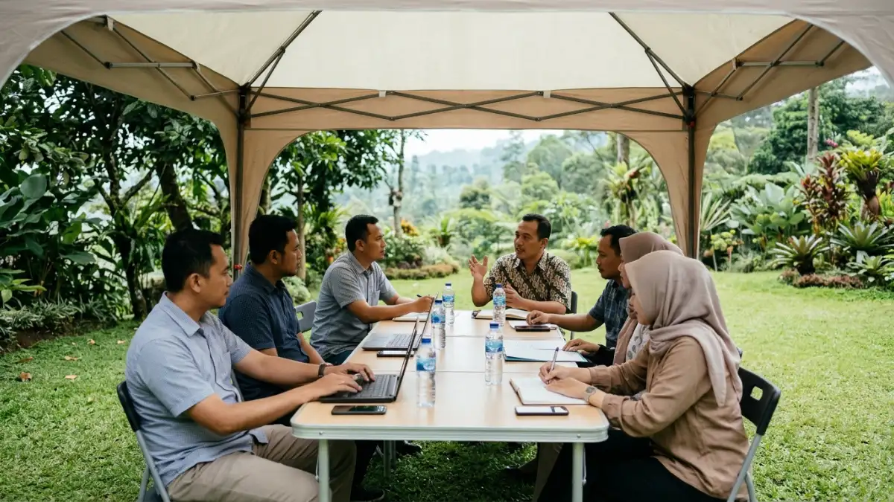

Tim kerja mengadakan meeting outdoor di camping ground dengan
latar hutan pinus dan pegunungan berkabut.
Tim kerja mengadakan meeting outdoor di camping ground dengan
latar hutan pinus dan pegunungan berkabut.
Meeting outdoor adalah pertemuan kerja yang digelar di ruang terbuka, seperti area camping, taman, atau kebun, untuk diskusi yang lebih segar dan fokus.
Meeting outdoor memindahkan rapat dari ruang tertutup ke lingkungan terbuka dengan agenda yang tetap terstruktur.
Studi Stanford University tahun 2014 menemukan bahwa berjalan meningkatkan keluaran kreatif rata-rata sekitar 60 persen.
Studi University of Michigan tahun 2008 menemukan bahwa berinteraksi dengan alam meningkatkan performa memori kerja sekitar 20 persen.
Keberhasilan meeting outdoor bergantung pada lokasi, cuaca, perlengkapan, dan agenda yang realistis.
Format ini cocok untuk brainstorming, evaluasi, dan perencanaan, tetapi kurang cocok untuk rapat yang membutuhkan dokumen sensitif.
- Apa Itu Meeting Outdoor dan Kapan Cocok Digunakan?
- Apa Manfaat Meeting Outdoor bagi Tim?
- Bagaimana Cara Kerja Meeting Outdoor yang Efektif?
- Jenis Meeting Outdoor yang Umum Digelar
- Faktor Apa yang Perlu Dipertimbangkan Sebelum Menggelar Meeting Outdoor?
- Apa Saja Kesalahan Umum dalam Meeting Outdoor?
- Tips Menjalankan Meeting Outdoor Agar Hasilnya Maksimal
- Meeting Outdoor atau Meeting Indoor, Mana yang Lebih Cocok?
- Kesimpulan
- FAQ
Apa Itu Meeting Outdoor dan Kapan Cocok Digunakan?
Meeting outdoor adalah rapat kerja yang dilakukan di luar ruangan dengan agenda, peserta, dan target hasil yang jelas. Format ini cocok untuk diskusi kreatif, evaluasi, dan perencanaan tim.
Meeting outdoor berbeda dari sekadar rekreasi kantor. Rapat tetap memiliki tujuan, pemimpin diskusi, dan catatan hasil keputusan. Perbedaannya terletak pada suasana.
Peserta duduk di bawah tenda peneduh, di tepi hutan pinus, atau di area camping ground dengan udara terbuka, bukan di ruang rapat ber-AC.
Format ini umumnya dipakai oleh perusahaan, komunitas, sekolah, dan organisasi yang ingin memecah kebuntuan diskusi.
Waktu yang tepat adalah saat tim membutuhkan ide baru, ingin memperkuat hubungan antaranggota, atau menyusun rencana tahunan tanpa gangguan rutinitas kantor.
Daerah dataran tinggi seperti Batu, Jawa Timur, sering dipilih karena suhunya umumnya lebih sejuk dibanding daerah dataran rendah.
Meeting outdoor kurang cocok untuk rapat dengan banyak dokumen rahasia, presentasi layar yang rumit, atau agenda yang menuntut koneksi internet stabil sepanjang waktu.
Apa Manfaat Meeting Outdoor bagi Tim?
Manfaat utama meeting outdoor adalah suasana yang lebih segar, ide yang lebih beragam, dan hubungan antaranggota tim yang lebih cair dibanding rapat di ruang tertutup.
Manfaat pertama berkaitan dengan kreativitas. Studi Stanford University yang dipublikasikan pada tahun 2014 menemukan bahwa berjalan meningkatkan keluaran kreatif rata-rata sekitar 60 persen pada tes berpikir divergen.
Temuan ini menunjukkan bahwa bergerak dan berada di lingkungan yang berbeda dapat membantu munculnya ide.
Manfaat kedua berkaitan dengan fokus. Studi University of Michigan yang terbit pada tahun 2008 menemukan bahwa peserta yang berinteraksi dengan alam menunjukkan peningkatan performa tes memori kerja sekitar 20 persen.
Hasil studi tidak otomatis berlaku pada semua tim, tetapi memberi gambaran bahwa lingkungan alami dapat mendukung konsentrasi.
Manfaat ketiga bersifat sosial. Suasana santai membuat peserta lebih mudah berbicara terbuka. Anggota yang biasanya pendiam di ruang rapat sering lebih berani menyampaikan pendapat saat duduk melingkar di ruang terbuka.
Manfaat keempat bersifat praktis. Tim dapat menggabungkan rapat dengan kegiatan ringan, seperti jalan santai atau makan bersama, sehingga satu hari kegiatan menghasilkan keputusan sekaligus kedekatan antaranggota.
Bagaimana Cara Kerja Meeting Outdoor yang Efektif?
Meeting outdoor yang efektif bekerja dengan tiga tahap, yaitu persiapan agenda dan lokasi, pelaksanaan diskusi bertahap, dan pencatatan keputusan yang ditindaklanjuti setelah acara selesai.
Tahap persiapan menentukan sebagian besar hasil. Panitia menetapkan tujuan rapat, jumlah peserta, durasi, dan lokasi.
Panitia juga memeriksa prakiraan cuaca serta menyiapkan rencana cadangan bila hujan turun. Untuk susunan waktu yang lebih rinci, Anda dapat mempelajari cara menyusun agenda meeting outdoor yang efektif.
Tahap pelaksanaan sebaiknya dibagi menjadi sesi pendek. Sesi 45 hingga 60 menit yang diselingi jeda singkat umumnya lebih mudah dijaga fokusnya dibanding diskusi tiga jam tanpa henti.
Fasilitator memegang waktu, mengarahkan pembicaraan, dan memastikan semua peserta mendapat kesempatan bicara.
Tahap penutup meliputi pencatatan keputusan, pembagian tugas, dan tenggat tindak lanjut. Tanpa tahap ini, meeting outdoor berisiko hanya menjadi acara menyenangkan tanpa hasil kerja. Catatan sebaiknya dikirim kepada seluruh peserta pada hari yang sama.
Jenis Meeting Outdoor yang Umum Digelar
Jenis meeting outdoor yang umum digelar meliputi rapat brainstorming, evaluasi berkala, perencanaan strategi, rapat gabungan dengan kegiatan team building, dan pertemuan komunitas.
Rapat brainstorming memanfaatkan suasana santai untuk menggali ide. Formatnya biasanya melingkar, minim presentasi, dan banyak menggunakan papan tulis portabel atau kertas flipchart.
Rapat evaluasi berkala cocok untuk meninjau capaian bulanan atau kuartalan. Peserta lebih mudah membahas kendala secara jujur ketika suasana tidak terlalu formal.
Rapat perencanaan strategi biasanya berlangsung setengah hari hingga dua hari. Banyak tim memadukannya dengan menginap di area camping agar diskusi dapat berlanjut secara informal di malam hari.
Rapat gabungan dengan team building mengombinasikan sesi diskusi dan permainan kelompok. Pertemuan komunitas, seperti kelompok hobi atau organisasi mahasiswa, biasanya mengutamakan kebersamaan dengan agenda yang lebih longgar.

Peserta rapat berdiskusi di bawah tenda peneduh di area taman hijau dengan suasana alam terbuka.Faktor Apa yang Perlu Dipertimbangkan Sebelum Menggelar Meeting Outdoor?
Faktor utama sebelum menggelar meeting outdoor adalah lokasi, cuaca, jumlah peserta, kebutuhan listrik dan sinyal, perlengkapan, keselamatan, serta anggaran penyelenggaraan.
Faktor lokasi mencakup akses jalan, kapasitas area, ketersediaan toilet, dan tingkat kebisingan. Lokasi yang indah belum tentu nyaman bila sulit dijangkau atau terlalu ramai. Panduan pemilihan tempat tersedia pada artikel tentang cara memilih lokasi meeting outdoor di area camping ground.
Faktor cuaca menuntut kewaspadaan. Panitia sebaiknya memantau prakiraan resmi dari BMKG dan menyiapkan tenda peneduh, terpal, atau area berteduh permanen.
Jadwal pagi hingga siang sering lebih aman di banyak wilayah dataran tinggi, tetapi kondisi tetap dapat bervariasi.
Faktor perlengkapan meliputi meja, kursi, penerangan, sumber listrik, pengeras suara, dan alat tulis. Rincian barang dapat Anda lihat pada daftar perlengkapan meeting outdoor yang wajib disiapkan.
Faktor keselamatan mencakup kotak P3K, informasi kontak darurat, dan kondisi kesehatan peserta. Faktor anggaran mencakup sewa lokasi, konsumsi, transportasi, dan perlengkapan. Biaya dapat bervariasi tergantung lokasi, durasi, dan jumlah peserta.
Apa Saja Kesalahan Umum dalam Meeting Outdoor?
Kesalahan umum dalam meeting outdoor meliputi agenda terlalu padat, tidak menyiapkan rencana cadangan cuaca, memilih lokasi sulit diakses, dan mengabaikan kebutuhan listrik serta sinyal.
Kesalahan pertama adalah menganggap meeting outdoor sebagai acara santai tanpa target. Akibatnya diskusi melebar dan keputusan tidak tercatat. Solusinya adalah menetapkan hasil yang ingin dicapai sebelum acara dimulai.
Kesalahan kedua adalah tidak menyiapkan rencana cadangan. Hujan, angin kencang, atau panas terik dapat mengganggu jalannya rapat. Tenda peneduh dan area alternatif perlu disiapkan sejak awal.
Kesalahan ketiga adalah meremehkan logistik. Peserta yang kepanasan, kehausan, atau kesulitan mencari toilet akan kehilangan fokus. Air minum, konsumsi, dan fasilitas dasar perlu dipastikan.
Kesalahan keempat adalah memilih peserta terlalu banyak untuk lokasi yang terbatas. Diskusi kelompok besar di ruang terbuka mudah terganggu suara latar. Kelompok kecil dengan sesi paralel biasanya lebih terkendali.
Tips Menjalankan Meeting Outdoor Agar Hasilnya Maksimal
Tips menjalankan meeting outdoor agar maksimal adalah menyurvei lokasi lebih dulu, membatasi durasi sesi, menyiapkan fasilitator, dan menutup acara dengan tindak lanjut tertulis.
Lakukan survei lokasi minimal satu kali sebelum hari pelaksanaan. Periksa posisi matahari, arah angin, sumber suara, dan titik colokan listrik. Survei membantu panitia menata meja dan kursi dengan tepat.
Batasi durasi sesi dan sediakan jeda. Diskusi yang diselingi minuman hangat atau camilan membantu peserta tetap segar. Tentukan juga aturan sederhana, misalnya ponsel disimpan selama sesi inti.
Gunakan alat bantu yang tahan kondisi luar ruangan. Papan tulis portabel, kertas flipchart, dan spidol permanen lebih praktis dibanding presentasi layar yang sulit terlihat di bawah cahaya terang.
Siapkan fasilitator yang memegang waktu dan menjaga kesetaraan bicara. Terakhir, kirim ringkasan keputusan kepada seluruh peserta setelah acara. Langkah ini memastikan hasil meeting outdoor benar-benar berpindah ke pekerjaan nyata.
Meeting Outdoor atau Meeting Indoor, Mana yang Lebih Cocok?
Meeting outdoor lebih cocok untuk diskusi kreatif dan penguatan tim, sedangkan meeting indoor lebih cocok untuk rapat teknis, presentasi layar, dan pembahasan dokumen sensitif.
Dari sisi suasana, meeting outdoor menawarkan udara segar dan interaksi yang lebih santai. Meeting indoor menawarkan kondisi terkendali, seperti suhu stabil, proyektor, dan akses internet.
Dari sisi risiko, meeting outdoor bergantung pada cuaca dan logistik tambahan. Meeting indoor relatif minim risiko, tetapi suasananya cenderung monoton bila dilakukan terus-menerus.
Dari sisi biaya, meeting indoor di kantor sendiri dapat lebih hemat. Meeting outdoor biasanya menambah biaya sewa lokasi, transportasi, dan perlengkapan, meskipun nilainya bisa sepadan bila tujuannya membangun ide dan kekompakan.
Banyak tim memilih pendekatan campuran. Rapat teknis dilakukan di kantor, sedangkan rapat strategi atau evaluasi besar dilakukan secara berkala di ruang terbuka.
Kesimpulan
Meeting outdoor efektif bila memiliki tujuan jelas, agenda realistis, lokasi sesuai, dan tindak lanjut tertulis. Format ini membantu kreativitas dan kedekatan tim, tetapi tetap membutuhkan persiapan logistik yang matang.
- Tentukan tujuan rapat sebelum memilih lokasi.
- Pantau cuaca dan siapkan rencana cadangan.
- Bagi agenda menjadi sesi pendek dengan jeda.
- Pastikan listrik, air minum, toilet, dan P3K tersedia.
- Catat keputusan dan bagikan sebelum hari berakhir.
FAQ